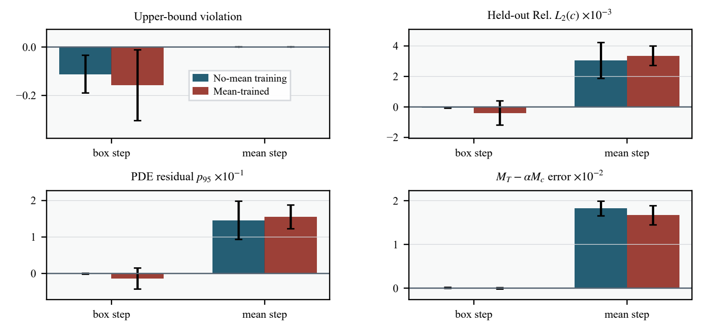

Scientific machine learning · Academic work 02
Physics-Informed Neural Networks
Two studies of constraint repair for reaction–diffusion PINNs: a broader MC-PINN workflow and a paired experiment separating bound clipping from mean adjustment after training.
- Authors
- Jiankun Xu · Lingyun Chang
- Problem
- Stiff heat–species coupling
- Documents
- Two research manuscripts
- Status
- Both under review

Paper 01 · Full study
MC-PINN: A Feasibility-Oriented Post-Projection PINN for Stiff Heat–Species Coupling
Under review · Computer Physics Communications
A Fourier-augmented PINN combines constraint losses, a staged time curriculum, and evaluation-time projection. Ten-seed comparisons across three coupling regimes test when improved feasibility is accompanied by improved accuracy and when the two diverge.
Abstract
We propose MC-PINN for stiff heat–species coupled reaction–diffusion, where bound violations and target-mean deviations persist under conventional soft penalties. A Fourier-augmented MLP is trained with bound/mean soft losses; at evaluation, species fields undergo alternating box–target-mean projection with a stiffness-inspired time curriculum. Ten-seed experiments cover one-way stiff coupling, bidirectional exothermic coupling, and a mild negative control. On one-way stiff coupling, MC-PINN attains the lowest Rel. L2 with zero violation and near-zero projection residual; on bidirectional stiff coupling, constraint residuals remain near zero; on the mild control, Vanilla PINN is more accurate, indicating that projection is most useful under strong stiffness. We further provide a closure-error bound, heuristic physics-gap diagnostics, and a feasibility–residual Pareto analysis.
Paper 02 · Paired experiment
Separating the Bound and Mean Steps of Post-Training Repair for Reaction–Diffusion PINNs
Under review · ICMLC 2027
This companion study evaluates the same saved networks in three modes: raw output, box clipping alone, and full mean–box repair. Paired comparisons separate the benefit of removing bound violations from the cost of enforcing an approximate mean target.
Abstract
Physics-informed neural networks are widely used for reaction–diffusion problems, but exported fields may violate bounds or a prescribed spatial mean. Post-training mean–box projection restores feasibility, yet prior work typically reports one combined before/after comparison and does not separate clipping from mean adjustment. On periodic stiff heat–species reaction–diffusion we run a held-out paired experiment with ten seeds and three evaluation modes: raw output, box clipping alone, and full 60-step ET-MBP. Box clipping removes held-out upper-bound violation from 11.2% to zero without measurable change in Rel. L2(c), PDE p95, or the coupled-mean invariant; measurable costs are confined to the mean step, with Rel. L2(c), PDE p95, and invariant error increasing by (3.05 ± 1.18) × 10−3, 0.146 ± 0.052, and 0.018 ± 0.002, respectively. Converged capped-simplex projection reproduces the 60-step values, so the cost reflects the closure target rather than iteration error.
Scope: these findings concern one stiff periodic benchmark with ten paired seeds, a finite-difference reference, and 50 time slices withheld from labeled training. The favorable clipping result also reflects reference saturation at the upper bound.